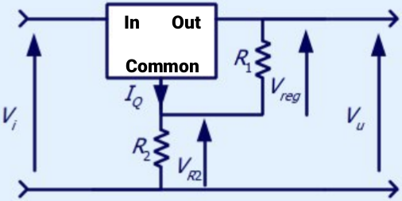
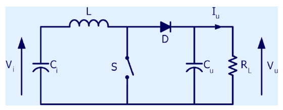
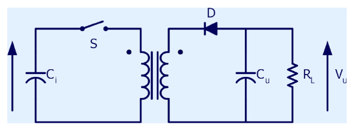

34c. Mashq: quvvat manbalari (28 ta imtihon savoli)
1. To'g'rilagich va ripple
070. The ripple voltage of a half-wave rectifier is halved if:
- the capacity doubles
- the frequency is halved
- the current doubles
- the input voltage is halved
Tarjima: Bir yarim davrli to'g'rilagichda ripple kuchlanishi qachon yarmiga tushadi?
Javob
(a) the capacity doubles. VR = I/(f·C): C ×2 → VR yarim. (b) chastota yarmi bo'lsa ripple ikki baravar bo'ladi; (c) tok ×2 → ripple ×2; (d) kirish kuchlanishi formulada yo'q. (31-dars)
094. In a full-wave rectifier, compared to a half-wave rectifier:
- the ripple output voltage doubles
- the DC output voltage halves
- the DC output voltage doubles
- the ripple output voltage halves
Tarjima: Ikki yarim davrli to'g'rilagich bir yarim davrliga nisbatan qanday?
Javob
(d) the ripple output voltage halves. Ikki yarim davrlida kondensator har yarim davrda zaryadlanadi: Δt ikki baravar qisqa → ripple yarmi. O'zgarmas chiqish kuchlanishi deyarli bir xil (cho'qqi kuchlanish). (31-dars)
2. Zener va chiziqli stabilizator
068. A Zener diode:
- cannot operate in breakdown region
- cannot operate in forward bias
- can keep constant the current through the diode
- can keep constant the voltage across the diode
Tarjima: Zener diod haqida qaysi gap to'g'ri?
056. A voltage regulator using a parallel Zener diode:
- draws constant the current from the power supply
- keeps constant the power supply voltage
- inverts the polarity of the output voltage
- can increase the output voltage
Tarjima: Parallel zener diodli stabilizator qanday ishlaydi?
Javob
(a) draws constant the current from the power supply. I_S = (VI − VZ)/R_S o'zgarmas: yuklama tokni kamroq olsa, ortiqchasi zener orqali oqadi. Shuning uchun manbadan olinadigan tok o'zgarmas (va bu FIK ni pasaytiradi). (32-dars)
028. The efficiency (ratio of output power/input power) of a linear series regulator with VI input and VO output is approximately
- VI / VO
- VO / VI
- 0.5
- VO / (VI + VO)
Tarjima: VI kirishli va VO chiqishli chiziqli ketma-ket stabilizatorning FIK i taxminan qancha?
Javob
(b) VO / VI. Ketma-ket tranzistor orqali yuklama toki to'liq oqadi: P_in ≈ VI·I, P_out = VO·I → η ≈ VO/VI. Ortiqcha kuchlanish issiqlikka aylanadi. (32-dars)
034. The efficiency of a linear regulator is approximately:
- Vout / Vin
- 1
- Vin / Vout
- (Vin / Vout)2
Tarjima: Chiziqli stabilizatorning FIK i taxminan qancha?
Javob
(a) Vout / Vin. 028 bilan bir xil: Vout/Vin. (32-dars)
064. The schematic in the following figure represents:

- a parallel voltage regulator
- a variable output voltage regulator
- a way to invert the polarity of the output voltage
- a flyback voltage regulator
Tarjima: Rasmdagi sxema nima?
Javob
(b) a variable output voltage regulator. Integral stabilizator (Vreg) va R1, R2 bo'luvchi: VO = Vreg·(R1 + R2)/R1 + IQ·R2. Rezistorlarni o'zgartirib chiqish kuchlanishini sozlash mumkin. (32-dars)
061. Compared to a linear regulator, a switching regulator allows to:
- increase the stability of the output voltage
- increase the efficiency of the regulator
- simplify the regulator circuit
- increase the accuracy of the output voltage
Tarjima: Impulsli (switching) stabilizator chiziqliga nisbatan nimaga imkon beradi?
3. Buck, boost, buck-boost, flyback: formulalar
030. The voltage gain of a buck regulator with duty cycle D = 0.75 is:
- 0.75
- 0.25
- 1.33
- 4
Tarjima: D = 0.75 bo'lgan buck regulatorning kuchlanish kuchaytirishi?
Javob
(a) 0.75. VO/VI = D = 0.75. (33-dars)
091. The voltage gain of a buck regulator with duty cycle D = 0.25 is:
- 0.75
- 0.25
- 1.33
- 4
Tarjima: D = 0.25 bo'lgan buck regulatorning kuchaytirishi?
Javob
(b) 0.25. VO/VI = D = 0.25. (33-dars)
079. The voltage gain of a boost voltage regulator with duty cycle D = 0.75 is:
- 0.75
- 0.25
- 1.33
- 4
Tarjima: D = 0.75 bo'lgan boost regulatorning kuchaytirishi?
Javob
(d) 4. VO/VI = 1/(1 − D) = 1/0.25 = 4. (c) 1.33 = 1/0.75 tuzoq: buck ning teskarisi emas! (34-dars)
003. For an ideal buck power regulator, the output voltage can be:
- higher than or equal to the input voltage
- higher than the input voltage
- lower than or equal to the input voltage
- lower than the input voltage
Tarjima: Ideal buck regulatorning chiqish kuchlanishi qanday bo'lishi mumkin?
Javob
(c) lower than or equal to the input voltage. VO = D·VI, D 0 dan 1 gacha → VO ≤ VI (D = 1 da teng). "Teng" so'zi bor variantni tanlang. (33-dars)
105. The output (regulated) voltage of a boost power regulator can be:
- Lower or equal to the input voltage
- Higher or equal to the input voltage
- Higher than the input voltage
- Lower than the input voltage
Tarjima: Boost regulatorning (stabillangan) chiqish kuchlanishi qanday bo'lishi mumkin?
Javob
(b) Higher or equal to the input voltage. VO = VI/(1 − D) ≥ VI (D = 0 da teng). (34-dars)
114. The transfer function in continuous current mode of an ideal buck power regulator depends on:
- the value of the inductance
- the characteristics of the diode
- the switch duty cycle
- the value of the load
Tarjima: Ideal buck regulatorning CCM dagi uzatish funksiyasi nimaga bog'liq?
Javob
(c) the switch duty cycle. Faqat duty cycle ga: VO/VI = D. (33-dars)
052. The transfer function in continuous current mode of an ideal boost power regulator depends on:
- the value of the inductance
- the characteristics of the diode
- the switch duty cycle
- the value of the load
Tarjima: Ideal boost regulatorning CCM dagi uzatish funksiyasi nimaga bog'liq?
Javob
(c) the switch duty cycle. Faqat D ga: 1/(1 − D). (34-dars)
048. The transfer function in continuous current mode of an ideal buck-boost power regulator depends on:
- the value of the inductance
- the characteristics of the diode
- the switch duty cycle
- the value of the load
Tarjima: Ideal buck-boost ning CCM dagi uzatish funksiyasi nimaga bog'liq?
Javob
(c) the switch duty cycle. Faqat D ga: −D/(1 − D). (34-dars)
018. The transfer function in continuous current mode of an ideal flyback power regulator depends on:
- the characteristics of the diode
- the switching duty cycle
- the galvanic insulation
- the value of the load
Tarjima: Ideal flyback ning CCM dagi uzatish funksiyasi nimaga bog'liq?
Javob
(b) the switching duty cycle. VO/VI = (N2/N1)·D/(1 − D): variantlar orasida duty cycle bor, u to'g'ri. (34-dars)
111. The transfer function in continuous current mode of an ideal flyback power regulator depends on:
- the characteristics of the diode
- the characteristics of the electrical transformer
- the galvanic insulation
- the value of the load
Tarjima: Ideal flyback ning CCM dagi uzatish funksiyasi nimaga bog'liq? (boshqa variantlar to'plami)
Javob
(b) the characteristics of the electrical transformer. Bu yerda duty cycle varianti yo'q, lekin transformator xarakteristikasi (o'ramlar nisbati N2/N1) bor. Galvanik izolyatsiya formulaga kirmaydi. (34-dars)
020. A buck-boost power regulator with an inductance:
- cannot increase the input voltage on the output
- cannot decrease the input voltage on the output
- cannot regulate the output voltage equal to the input
- its output voltage has inverse polarity to the input
Tarjima: Induktivlikli buck-boost regulator haqida qaysi gap to'g'ri?
Javob
(d) its output voltage has inverse polarity to the input. VO = −VI·D/(1 − D): chiqish qutbi teskari. U kuchlanishni oshira ham, kamaytira ham, teng ham qila oladi (D = 0.5 da |VO| = VI). (34-dars)
025. The output circuit is galvanically insulated from the input circuit for:
- buck power regulators
- boost power regulators
- flyback power regulators
- buck-boost power regulators
Tarjima: Qaysi regulatorda chiqish zanjiri kirishdan galvanik izolyatsiyalangan?
Javob
(c) flyback power regulators. Flyback da induktivlik o'rniga transformator: kirish va chiqish o'rtasida sim ulanishi yo'q, energiya magnit maydon orqali o'tadi. (34-dars)
4. Sxemani tanish
- Buck: kalit kirishda ketma-ket, keyin L chiqishga, diod tugundan yerga.
- Boost: L kirishda ketma-ket, kalit tugundan yerga, diod chiqishga.
- Buck-boost: kalit kirishda, L tugundan yerga, diod teskari yo'nalishda chiqishga.
- Flyback: transformator (ikki o'ram, nuqtalar), birlamchida kalit, ikkilamchida diod.
101. The schematic below represents:

- a flyback power regulator circuit
- an on-off load control circuit with a diode
- a buck power regulator circuit
- a voltage regulator with a Zener diode
Tarjima: Rasmdagi sxema nima?
Javob
(c) a buck power regulator circuit. Kalit kirish bilan ketma-ket, undan keyin L, tugundan yerga diod: buck. (33-dars)
063. The following schematic represents:

- a buck power regulator
- a half-wave rectifier with filter
- a flyback power regulator
- a boost power regulator
Tarjima: Rasmdagi sxema nima?
Javob
(d) a boost power regulator. L kirishda, kalit yerga, diod chiqishga: boost. (34-dars)
014. The following schematic represents:

- a flyback power regulator circuit
- a buck power regulator circuit
- a buck-boost power regulator circuit
- a boost power regulator circuit
Tarjima: Rasmdagi sxema nima?
Javob
(c) a buck-boost power regulator circuit. Kalit kirishda, L yerga, diod chiqishga teskari: buck-boost. (34-dars)
006. The following schematic represents:

- a buck power regulator
- a half-wave rectifier with filter
- a flyback power regulator
- a boost power regulator
Tarjima: Rasmdagi sxema nima?
Javob
(c) a flyback power regulator. Transformator, birlamchida kalit, ikkilamchida diod va kondensator: flyback. (34-dars)
080. For the circuit in the schematic below:

- the output voltage cannot be higher than the input voltage
- polarity of the the output voltage is always the same as the input
- polarity of the the output voltage is always inverted to the input
- the output voltage cannot be lower than the input voltage
Tarjima: Rasmdagi sxema uchun qaysi gap to'g'ri?
Javob
(b) polarity of the the output voltage is always the same as the input. Bu flyback: o'ramlar nuqtalari shunday ulanganki, chiqish kirish bilan bir xil qutbli. Flyback chiqishi kirishdan katta ham, kichik ham bo'lishi mumkin, shuning uchun (a) va (d) noto'g'ri. (34-dars)
5. Qayerga ko'proq shovqin chiqadi
116. A buck power regulator injects noise:
- more in the output circuit
- more in the input circuit
- equivalent in both input and output circuits
- operates smoothly, not relevant noise
Tarjima: Buck regulator shovqinni qayerga ko'proq chiqaradi?
Javob
(b) more in the input circuit. Kirish toki kalit bilan uzilib turadi (chiqishda L tokni silliqlaydi) → kirish zanjiriga. (34-dars)
043. A boost power regulator injects noise:
- more in the output circuit
- more in the input circuit
- equivalent in both input and output circuits
- operates smoothly, not relevant noise
Tarjima: Boost regulator shovqinni qayerga ko'proq chiqaradi?
Javob
(a) more in the output circuit. Kirishda L tok silliq, chiqishga esa tok diod orqali impulslar bilan boradi → chiqish zanjiriga. (34-dars)
047. A buck-boost power regulator injects noise:
- more in the output circuit
- more in the input circuit
- equivalent in both input and output circuits
- operates smoothly, not relevant noise
Tarjima: Buck-boost regulator shovqinni qayerga ko'proq chiqaradi?
Javob
(c) equivalent in both input and output circuits. Kirishda ham (kalit), chiqishda ham (diod) tok impulsli → ikkalasiga teng. (34-dars)
Javoblar kaliti
| Savol | 070 | 094 | 068 | 056 | 028 | 034 | 064 |
|---|---|---|---|---|---|---|---|
| Javob | a | d | d | a | b | a | b |
| Savol | 061 | 030 | 091 | 079 | 003 | 105 | 114 |
| Javob | b | a | b | d | c | b | c |
| Savol | 052 | 048 | 018 | 111 | 020 | 025 | 101 |
| Javob | c | c | b | b | d | c | c |
| Savol | 063 | 014 | 006 | 080 | 116 | 043 | 047 |
| Javob | d | c | c | b | b | a | c |
Diqqat: imtihonda variantlar tartibi o'zgarishi mumkin. Harfni emas, ma'noni yodlang.
📝 Konspekt
- CCM uzatish funksiyasi: faqat D (flyback da + o'ramlar nisbati). L, diod, yuklama ta'sir qilmaydi.
- Buck VO ≤ VI; boost VO ≥ VI; buck-boost qutbni teskari qiladi; flyback izolyatsiyalangan.
- Shovqin: buck → kirish, boost → chiqish, buck-boost → ikkalasi.
- Parallel zener: manbadan o'zgarmas tok. Zener: kuchlanishni o'zgarmas ushlaydi.
- Impulsli stabilizatorning asosiy afzalligi: FIK.